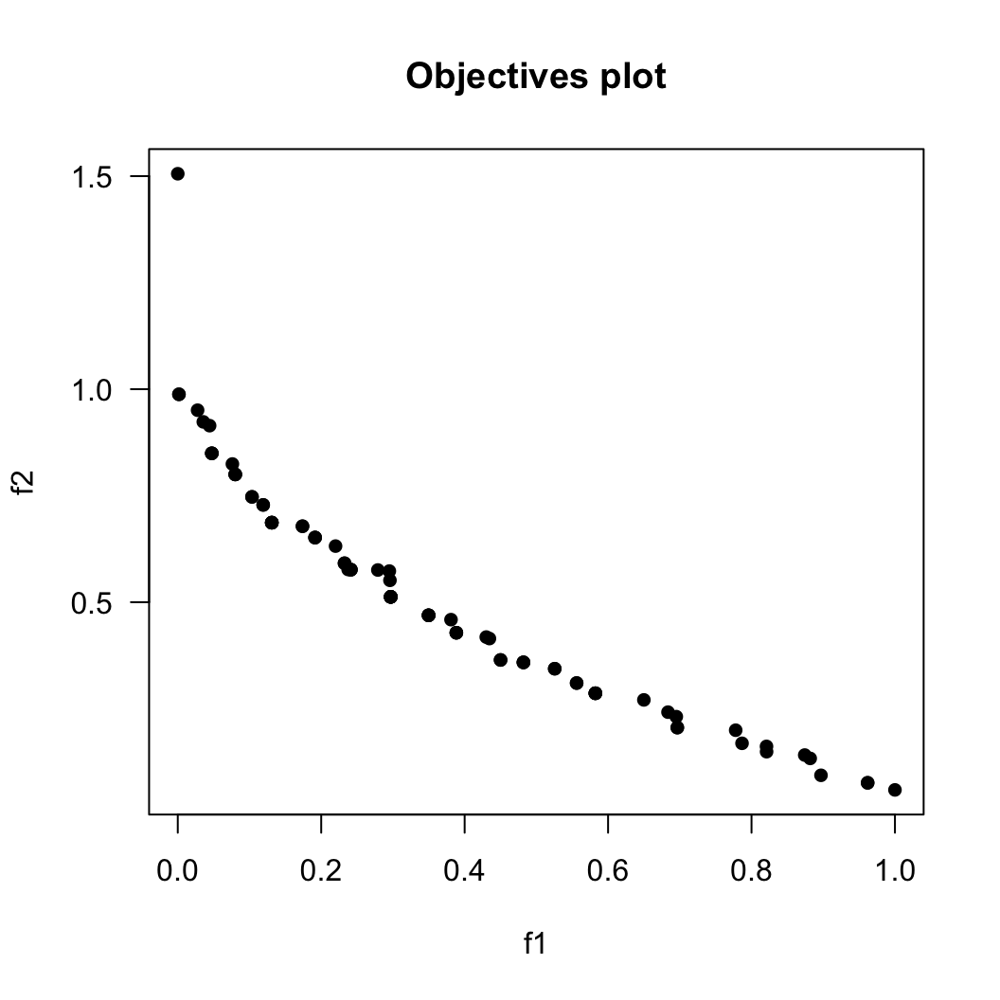

vignettes/Modification_Usage.Rmd
Modification_Usage.RmdLet us show how to prepare a new component for the MOEADr framework, add it to an existing algorithmic composition, and perform some basic comparisons. For this example, we will create a simple variation operator that does not exist in the package in its current state, but the same principle works for adding components of other classes.
Consider the following “Gaussian Mutation” operator: given a set \(X\) of solutions \(\mathbf{x_i} \in X\) we add, with probability \(p\), a gaussian noise \(r_{ij} \sim \mathcal{N}(\mu, \sigma)\) to each \(x_{ij} \in \mathbf{x_i} \in X\). The R code for this operator is as follows:
variation_gaussmut <- function(X, mean = 0, sd = 0.1, p = 0.1, ...) {
# You want to do some error checking on the parameters here
# But for the sake of brevity in this case study, we are skipping it.
R <- rnorm(length(X), # vector of normally distributed values,
mean = mean, # length(R) = nrow(X) * ncol(X)
sd = sd)
R <- R * (runif(length(X)) <= p) # Apply binary mask, probability = p
return (X + R) # Add mutations to the solution matrix
}We would like to highlight a few characteristics of the code sample above. First, the name of the function must be in the form variation_[functionname]. The MOEADr package uses the function name prefixes to perform some automated functions such as listing existing components and error checking. The list of current function prefixes and their meaning is:
Second, the parameters in the function definition must include: the solution set matrix \(X\), the local parameters for the function, and finally an ellipsis argument to catch any other inputs passed by the main moead() call, such as objective values and former solution sets. If you want examples of using these parameters please look at the source code for some of the variation operators included, such as the Binomial Recombination operator (variation_binrec)
Other component classes follow similar rules. Please look at existing implementations as basis for new ideas.
The MOEADr package first searches for operators in the base R environment. Therefore, if you have named your component correctly, all you need to do is add it to the appropriate parameter in the moead() call.
For example, let us replace the variation stack of the original MOEA/D by our Gaussian Mutation operator, followed by simple truncation, and test it on a standard benchmark function (performing a qualitative graphical comparison against the original MOEA/D just for fun):
## Warning: package 'smoof' was built under R version 4.2.2## Warning: package 'ParamHelpers' was built under R version 4.2.2
ZDT1 <- make_vectorized_smoof(prob.name = "ZDT1",
dimensions = 30)
problem.zdt1 <- list(name = "ZDT1",
xmin = rep(0, 30),
xmax = rep(1, 30),
m = 2)
myvar <- list() # Initialize variation stack
myvar[[1]] <- list(name = "gaussmut", p = 0.5) # Our new operator
myvar[[2]] <- list(name = "truncate") # Truncation repair operator
results.orig <- moead(problem = problem.zdt1,
preset = preset_moead("original"),
showpars = list(show.iters = "none"),
seed = 42)
results.myvar <- moead(problem = problem.zdt1,
preset = preset_moead("original"),
variation = myvar,
showpars = list(show.iters = "none"),
seed = 42)Since the function that implements the Gaussian Mutation operator was defined in the main environment, and has the required variation_ prefix, all that we need to do to use it in the moead() function is to add the necessary parameters to the variation stack. The figures below show the final Pareto front for both the standard MOEA/D and the MOEA/D with a Gaussian Mutation operator. From these images, it seems (rather unsurprisingly) that the new operator still needs some work.
plot(results.orig, suppress.pause = TRUE)
plot(results.myvar, suppress.pause = TRUE)
We welcome new contributions to MOEADr’s component library: users are invited and encouraged to contact us to add their published contributions to the package (or simply clone the GitHub repository and submit his or her contribution as a pull request).